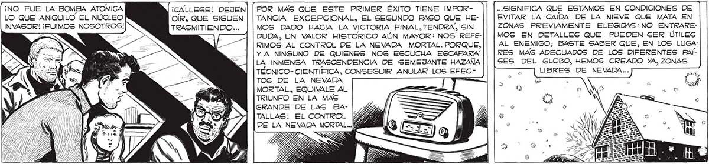
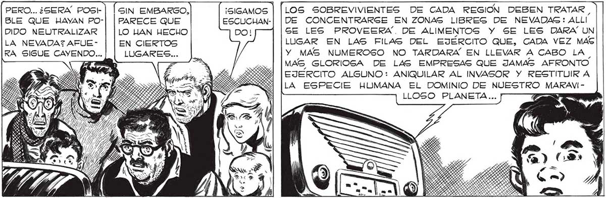
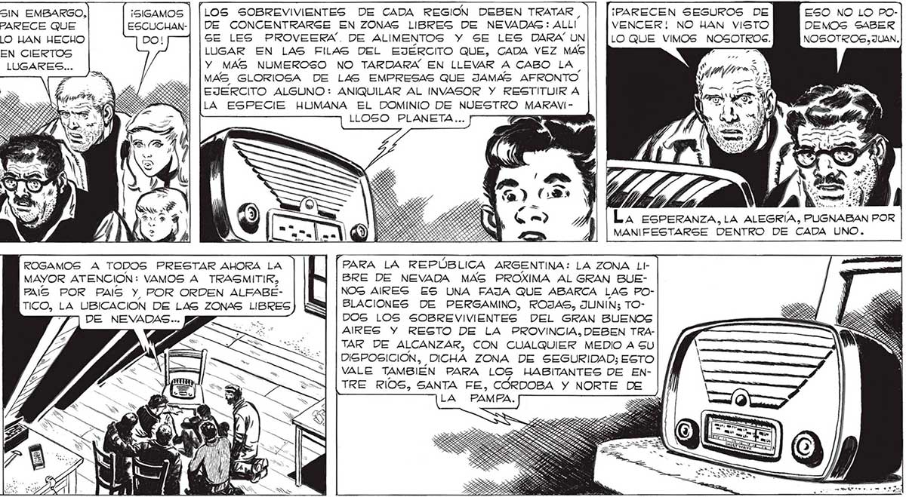

¡NO FUE LA BOMBA ATOMICA ¡CAÁLLESE! DEJEN LO QUE ANIQUILO EL NÚCLEO OÍR, QUE SIGUEN INVASOR! ¡FUIMOS NOSOTROS! TREASMITIENDO... SIGNIFICA QUE ESTAMOS EN CONDICIONES DE 321 EVITAR LA CAÍDA DE LA NIEVE QUE MATA EN ZONAS PREVIAMENTE ELEGIDAS :NO ENTRAREMOS EN DETALLES QUE PUEDEN GER ÚTILES AL ENEMIGO; BASTE SABER QUE, EN LOS LUGARES MAS ADECUADOS DE LOS DIFERENTES PAÍSES DEL GLOBO, HEMOS CREADO YA, ZONAS LIBRES DE NEVADA... POR MAS QUE ESTE PRIMER ÉXITO TIENE IMPORTANCIA EXCEPCIONAL, EL SEGUNDO PASO QUE HEMOS DADO HACIA LA VICTORIA FINAL, TENDRA, SIN DUDA, UN VALOR HISTORICO AÚN MAYOR: NOS REFERIMOS AL CONTROL DE LA NEVADA MORTAL. PORQUE, Y A NINGUNO DE QUIENES NOS ESCUCHA ESCAPARA LA INMENSA TRASCENDENCIA DE SEMEJANTE HAZANA TEÉCNICO- CIENTIFICA, CONSEGUIR ANULAR LOS EFECTOS DE LA NEVADA .. MORTAL, EQUIVALE AL TRIUNFO EN LA MAS GRANDE DE LAS BATALLAS! EL CONTROL MORTAL PERO... ¿SERA POSH | | SIN EMBARGO, LOS SOBREVIVIENTES DE CADA REGION DEBEN TRATAR , ¡PARECEN SEGUROS DE ESO NO LO POBLE QUE HAYAN PO-| | PARECE QUE DE CONCENTRARSE EN ZONAS LIBRES DE NEVADAS: ALL! VENCER! NO HAN VISTO DEMOS SABER DIDO NEUTRALIZAR | |LO LAN HECHO ! SE LES PROVEERA. DE ALIMENTOS Y SE LES DARA UN|| [LOQUE VIMOS NOSOTROS. NOSOTROS, JUAN. LA NEVADA7AFUE- | | EN CIERTOS LUGAR EN LAS FILAS DEL EJERCITO QUE, CADA VEZ MAS RA SIGUE CAYENDO... | | LUGARES... Y MAS NUMEROSO NO TARDARÁ EN LLEVAR A CABO LA 7 MAS GLORIOSA DE LAS EMPRESAS QUE JAMAS AFRONTO EJERCITO ALGUNO: ANIQUILAR AL INVASOR Y RESTITUIR A LA ESPECIE HUMANA EL DOMINIO DE NUESTRO MARAVIr k VD , re , La ESPERANZA, LA ALEGRÍA, PUGNABAN POR MANIFESTARSE DENTRO DE CADA UNO. ROGAMOS A TODOS PRESTAR AHORA LA PARA LA REPÚBLICA ARGENTINA: LA ZONA LIPuro ERAN TANTAG MAYOR ATENCION: VAMOS A TRASMITIR, BRE DE NEVADA MAS PROXIMA AL GRAN BUEYA LAS VECES FAIS POR PAIS Y POR ORDEN ALFABÉ- El NOG AIRES ES UNA FAJA QUE ABARCA LAS POQUE NOS HABIA- TICO, LA UBICACION DE LAS ZONAS LIBRES <= BLACIONES DE PERGAMINO, ROJAS, JUNIN;3 TOMOS ILUSIONADO, - DE NEVADAS... » ”3 DOS LOS SOBREVIVIENTES DEL GRAN BUENOS PARA ESTRELLAR- Ez A AIRES Y RESTO DE LA PROVINCIA, DEBEN TRANOS: LUEGO CON- : o TAR DE ALCANZAR, CON CUALQUIER MEDIO A GU TRA LA TERRIBLE Se e DISPOSICION, DICHA ZONA DE SEGURIDAD; ESTO REALIDAD DEL á - o 5 VALE TAMBIEN PARA LOS HABITANTES DE ENFABULOSO PODER IC A sx [TRE RIOS, SANTA FE, CORDOBA Y NORTE DE DE LOS INVASORES, QUE TODAVÍA NOS RESISTIAMOS A CREER LO QUE LA VOZ CLARA, ENERGICA DEL LOCUTOR, NOS DECÍA...


